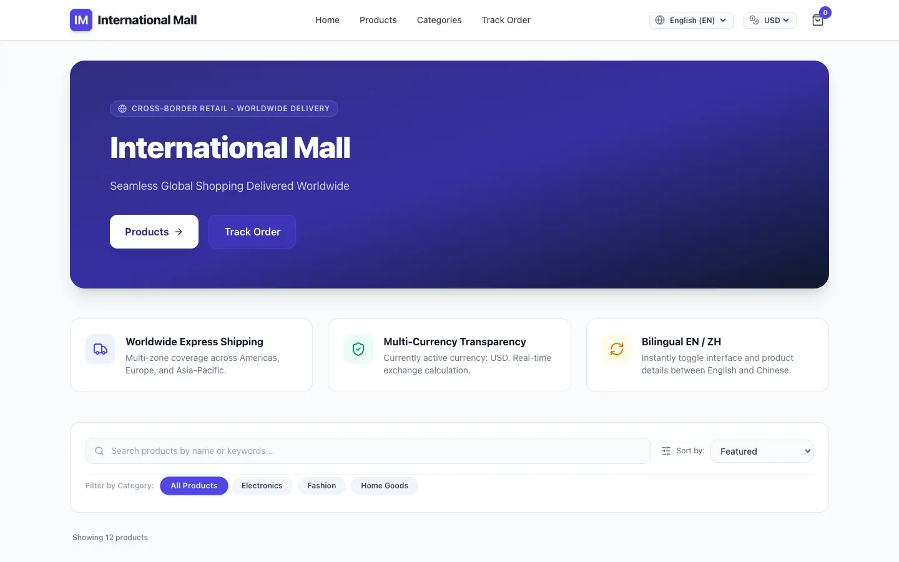
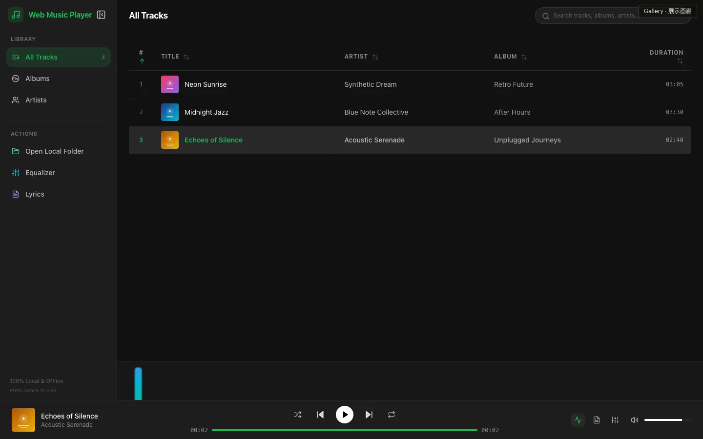

一句话开始的作品。
画廊中的所有项目均从一句话需求开始，仅经一轮交互，所有问题均采用推荐答案，随后由 codsh 完成落地。查看原始需求、真实截图，也亲自试试结果。

浏览器实际运行截图
最初的一句话
做一个国际商城
双语 B2C 店面，支持美元、欧元、人民币和日元标价，含精选商品、购物车、模拟国际结账与订单追踪。
- 模型
- Gemini 3.8 Flash
- 思考等级
- max
桌面和手机浏览器均可使用。结账为模拟流程，订单只保存在本浏览器中，不会真实扣款。
购物与作品说明
怎么逛
- EN / 中文
- 切换界面与商品文案
- USD EUR CNY JPY
- 全站商品与购物车价格即时换算
- 商品目录
- 按分类筛选、搜索、打开详情并加入购物车
- 结账
- 访客地址、标准/加急配送，模拟信用卡 / PayPal / Apple Pay
- 追踪
- 用确认页上的订单号查询物流状态
从需求到结果
引文保留了项目需求文档中的原话。这个项目同样仅经一轮交互，所有问题均采用推荐答案，由 codsh 完成规划与实现；收录的是该项目的构建快照，订单保存在浏览器中，而不是服务端文件。
 浏览器实际运行截图
浏览器实际运行截图
最初的一句话
做一个 web 版的荣誉勋章游戏
一款致敬经典二战射击游戏的浏览器作品。穿过战壕、潜入碉堡，使用 M1 加兰德与汤姆逊完成三阶段任务。
- 模型
- Gemini 3.8 Flash
- 思考等级
- max
需要桌面浏览器、键盘和鼠标。手机可浏览截图，游戏暂不支持触屏操控。
玩法与作品说明
操作方式
- 点击开始
- 进入战场并锁定鼠标
- W A S D / 鼠标
- 移动 / 环视
- 左键 / 右键
- 射击 / 瞄准
- 1 / 2 / R
- 切换武器 / 换弹
- Shift / 空格
- 冲刺 / 跳跃
- Esc
- 释放鼠标
从需求到结果
引文保留了项目需求文档中的原话。这个项目同样仅经一轮交互，所有问题均采用推荐答案，由 codsh 完成规划与实现；试玩收录的是该项目的构建快照。
非官方致敬作品，与《荣誉勋章》及其权利方无关联。名称仅用于说明原始需求与灵感来源。

浏览器实际运行截图
最初的一句话
做一个 web 音乐播放器，但是要像本地应用一样
纯前端运行的桌面级音乐播放器。直接访问本地音频文件夹无需上传云端，配有 10 段专业图形均衡器、实时频谱波形可视化，以及时间戳同步歌词滚动显示。
- 模型
- Gemini 3.8 Flash
- 思考等级
- max
现代浏览器均可直接试听内置示范曲目；打开本地文件夹功能在支持 File System Access API 的桌面浏览器中效果最佳。
使用与作品说明
怎么使用
- 播放 / 暂停
- 点击曲目或按空格键播放内置示范音频
- 10 段均衡器
- 打开 EQ 弹窗微调各频段增益或选择摇滚、流行等预设
- 频谱可视化
- 在柱状频谱、波形和关闭之间随时切换
- 同步歌词
- 按 L 键或点击歌词图标展开毫秒级同步滚动的歌词抽屉
- 本地文件夹
- 点击“打开本地文件夹”零上传导入自己的音乐库
从需求到结果
引文保留了项目需求文档中的原话。这个项目同样仅经一轮交互，所有问题均采用推荐答案，由 codsh 完成规划与实现；收录的是该项目的构建快照，曲库与偏好持久化保存在 IndexedDB 中。